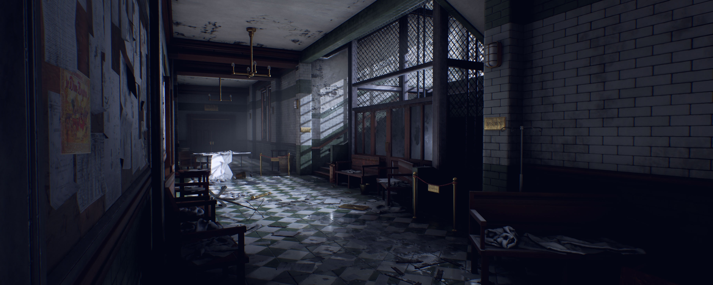

ENTER VENTS
Hopping up to the vents, it is surprisingly easy to get into them. You carefully trek through the vents, eventually finding yourself to another room with a control panel.
After some close inspection you realize this is the manual override panel for the cells in case the power goes out. It’s mostly used for after hours maintenance but in this situation it’s perfect for your mission.